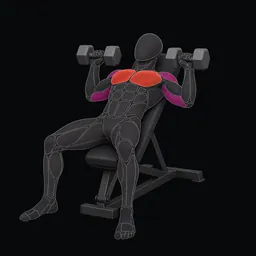

P04 · CONNECTED RECOVERY CONCEPT
Your workout, right where you left it.
Keep the compact, illustrated workout. Resume authored values without starting another session. An interrupted Log checks the exact saved set before offering Retry. This browser concept uses synthetic state; it does not store app data or demonstrate physical timing.
Upper B
1 of 2 exercises · 0 sets saved

Incline Dumbbell Bench Press
Working set 1 · draftWeight · lb82.5
Reps12
Effort
No sets saved yet
Draft values above
Draft values above
Planned rest · 2:00